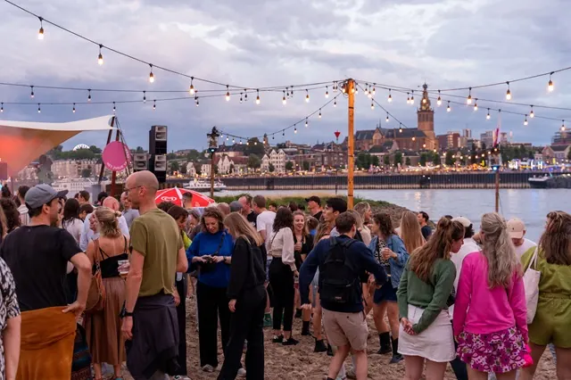

Vierdaagsefeesten Nijmegen 2027
Bijgewerkt op 25 oktober 2026.
Elk jaar in juli verandert de binnenstad van Nijmegen een week lang in een groot gratis festival. Tijdens de Vierdaagsefeesten, die veel Nijmegenaren nog steeds de Zomerfeesten noemen, staan er op tientallen plekken podia, van de Waalkade tot het Valkhofpark. Hier lees je wanneer de feesten in 2027 zijn, waar je welke muziek vindt, hoe laat het begint en eindigt, en hoe je er het beste komt.

Wanneer zijn de Vierdaagsefeesten 2027?
De Vierdaagsefeesten 2027 duren van zaterdag 17 juli tot en met vrijdag 23 juli. De feesten beginnen altijd op de zaterdag voor de Nijmeegse Vierdaagse en eindigen op de vrijdagavond, na de intocht van de wandelaars. Zo zijn het zeven dagen feest.
Het volledige programma met alle artiesten komt meestal pas kort voor de zomer naar buiten. Tot die tijd worden de namen per podium bekendgemaakt.
Hoe laat beginnen en eindigen de feesten?
- Begin: de meeste buitenpodia beginnen tussen 14.00 en 15.00 uur of tussen 18.00 en 20.00 uur. Dat verschilt per podium en per dag.
- Einde: van zaterdag tot en met donderdag stoppen de optredens om 00.30 uur. Op de laatste vrijdag gaat de muziek door tot 01.00 uur.
- Terrassen: blijven open tot 02.00 uur, maar dan zonder muziek.
Van Zomerfeesten naar Vierdaagsefeesten
De eerste Zomerfeesten waren in 1970, bedacht door Nico Grijpink. Het idee was simpel: de stad liep vol met wandelaars en bezoekers, en daar hoorde een feest bij. Sinds 1973 openen de feesten op zaterdag en sluiten ze op vrijdagavond. In 1985 kwam het Valkhof erbij, en in 1998 kreeg het feest de naam Vierdaagsefeesten. In 2026 was de 55e editie.
Het is uitgegroeid tot een van de grootste evenementen van Nederland. De organisatie telt meer dan een miljoen bezoeken per editie, met tussen 100.000 en 250.000 mensen per dag. Er zijn meer dan 1.300 optredens van zo'n 3.500 artiesten, en ongeveer 130 terrassen. Bezoekers geven het feest gemiddeld een 8,3, en ongeveer 65 procent komt uit de regio Nijmegen.
Podia en locaties: waar vind je wat?
Elke plek heeft zijn eigen sfeer en muziekstijl. Een greep uit de vaste locaties:
Aan de Waal
- Matrixx Live aan de Kade: het hoofdpodium op de Waalkade, met de grootste namen.
- De Kaaij aan de Waal en Kaaij Hoog: feest met uitzicht op de rivier.
- Waalkade Disco Stage en Dock 17: dance en disco aan het water.
- Stadseiland Stek: een eigen plek op het eiland in de Waal.
Lees meer over de Waalkade.
In de binnenstad
- Grote Markt, Plein 1944, Hertogplein en Koningsplein: grote pleinen met een eigen podium.
- Molenstraat: de plek voor Nederlandstalige muziek en meezingers.
- Kelfkensbos Festival: naast het Valkhof.
- De Ramblas: de route van het station naar de stad, met muziek onderweg.
- Stevenskerk en Sint Jacobskapel: rustiger optredens binnen.
- Burchtstraat, Bloemerstraat en de terrassen: muziek in de winkelstraten en bij de horeca.
Parken en rustige plekken
- Valkhof Festival: in het Valkhofpark, met indie, alternatief en nieuw talent.
- Matrixx at the Park en Park Kronenburg: feest in het groen.
- Mariënburgplein: het programma voor kinderen en jongeren.
- Smaakmarkt: voor wie vooral wil eten en drinken.
Valkhof Festival
Het Valkhof Festival is sinds 1985 onderdeel van de feesten en heeft een eigen karakter. In het Valkhofpark, boven de Waal, staan vooral bands en artiesten die je (nog) niet van de radio kent. Het is er wat rustiger dan op de kade, en daarom een favoriete plek van veel Nijmegenaren.
Roze Woensdag
Op de woensdag van de feestweek kleurt de stad roze. Roze Woensdag is begonnen als dag voor de lhbti+-gemeenschap en is uitgegroeid tot een van de drukste dagen van de week, met roze outfits, feesten en speciale programma's. In 2027 valt Roze Woensdag op woensdag 21 juli.
Waal in Vlammen
Een van de oudste tradities is Waal in Vlammen, het vuurwerk boven de Waal dat sinds 1971 bij de feesten hoort. De Waalkade en de Waalbrug zijn dan bomvol, dus kom op tijd als je een goed plekje wilt. De avond en het tijdstip staan in het programma en de app.
Wat kost het? Bekers en polsbandje
De Vierdaagsefeesten zijn gratis. Je hoeft geen kaartje te kopen om de stad in te gaan of bij een podium te staan.
- Beker: bij de horeca drink je uit een herbruikbare beker. Die betaal je eenmalig €1 en gebruik je de hele week.
- Polsbandje (€12,50): optioneel. Hiermee kun je zeven dagen lang gratis naar het toilet, en krijg je elke dag toegang tot een exclusief programma van 14.00 tot 21.00 uur op wisselende plekken, zoals Park Kronenburg, Stadseiland Stek en het Valkhof.
Programma en app
Het actuele programma staat op vierdaagsefeesten.nl en in de app van de Vierdaagsefeesten. In de app zie je per podium wie er speelt, krijg je pushmeldingen over je favoriete artiesten en vind je kortingsbonnen. Liever op papier? Programmaboekjes liggen bij de horeca en bij de merchandisestand aan het eind van de Burchtstraat.
Zo kom je bij de Vierdaagsefeesten
De binnenstad is tijdens de feesten grotendeels afgesloten voor auto's. De organisatie raadt aan om met de fiets, het openbaar vervoer of lopend te komen.
- Fiets: er zijn extra fietsenstallingen rond de binnenstad.
- Trein: er rijden extra treinen tussen Zwolle, Arnhem en Nijmegen, tussen Utrecht, Arnhem en Nijmegen en tussen 's-Hertogenbosch en Nijmegen. Op de laatste vrijdag geldt een aangepaste dienstregeling met pendeltreinen tussen Arnhem en Nijmegen. Zet vooraf genoeg saldo op je OV-chipkaart of check in met je bankpas, want bij de automaten staan lange rijen.
- Nachtbus: 's nachts rijden er extra nachtbussen de regio in.
- Auto: parkeer op een P+R, zoals P+R Noord, en neem de bus naar de stad. Er zijn ook Kiss & Ride-plekken om iemand af te zetten of op te halen.
Parkeren in het centrum tijdens de feesten
- Keizer Karelgarage (684 plekken) en parkeerterrein Oude Stad zijn de hele week open.
- Kelfkensbosgarage: je kunt er elke dag alleen tot 14.00 uur inrijden.
- Molenpoortdak: beperkt beschikbaar.
- Stadhuis, Mariënburg, Plein 1944, Eiermarkt en St. Josephhof: alleen voor abonnementhouders.
Tarieven, adressen en de P+R-terreinen vind je in onze gids parkeren in Nijmegen.
Overnachten tijdens de feesten
In de feestweek lopen ook de wandelaars van de Vierdaagse door de stad, en dan zijn hotels en B&B's snel vol. Boek dus ruim op tijd. Tips vind je in weekendje Nijmegen: hier kun je leuk overnachten en in ons overzicht van campings rond Nijmegen.
Tips voor een goede feestweek
- Spreek een vast herkenningspunt af met je vrienden. Het mobiele netwerk is 's avonds vaak overbelast.
- Neem je beker mee als je terugkomt, dan hoef je niet opnieuw te betalen.
- Drink genoeg water, zeker op warme dagen.
- Wil je het rustiger? Ga overdag, of kies het Valkhof, de kerken of de parken.
- Kom je ook voor de wandelaars? Lees dan onze gids over de Nijmeegse Vierdaagse en de veelgestelde vragen over de Vierdaagse.
Veelgestelde vragen
Wanneer zijn de Vierdaagsefeesten 2027?
De Vierdaagsefeesten 2027 zijn van zaterdag 17 juli tot en met vrijdag 23 juli. De feesten beginnen op de zaterdag voor de Vierdaagse en eindigen op de vrijdagavond na de intocht.
Zijn de Vierdaagsefeesten gratis?
Ja, de toegang is gratis. Je betaalt eenmalig €1 voor een herbruikbare beker. Een polsbandje van €12,50 is optioneel en geeft je onder meer gratis toiletbezoek en toegang tot een exclusief dagprogramma.
Wat is het verschil tussen de Zomerfeesten en de Vierdaagsefeesten?
Er is geen verschil: het is hetzelfde feest. Het begon in 1970 als de Zomerfeesten en heet sinds 1998 officieel de Vierdaagsefeesten. Veel Nijmegenaren gebruiken de oude naam nog steeds.
Hoe laat stoppen de Vierdaagsefeesten?
Van zaterdag tot en met donderdag stoppen de optredens om 00.30 uur, op vrijdag om 01.00 uur. De terrassen mogen tot 02.00 uur open blijven, maar dan zonder muziek.
Wanneer is Roze Woensdag 2027?
Roze Woensdag valt in 2027 op woensdag 21 juli, midden in de feestweek.
Waar parkeer je tijdens de Vierdaagsefeesten?
Het beste op een P+R, zoals P+R Noord, met de bus naar de stad. In het centrum zijn de Keizer Karelgarage en parkeerterrein Oude Stad de hele week open. De meeste andere garages zijn dan alleen voor abonnementhouders.
Wanneer komt het programma van de Vierdaagsefeesten 2027?
Het volledige programma verschijnt meestal kort voor de zomer op vierdaagsefeesten.nl en in de app. Daarvoor worden artiesten per podium bekendgemaakt.
Wat is het Valkhof Festival?
Het Valkhof Festival is het deel van de Vierdaagsefeesten in het Valkhofpark, sinds 1985. Er staan vooral bands en nieuw talent uit de indie- en alternatieve hoek, en het is er wat rustiger dan op de Waalkade.